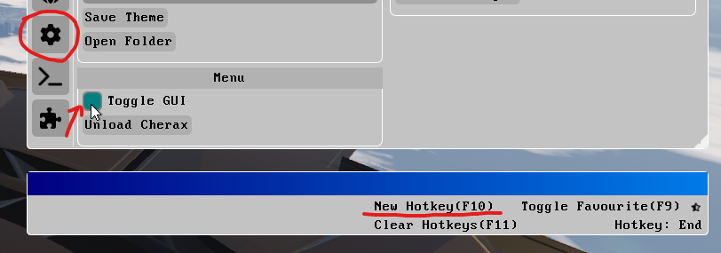
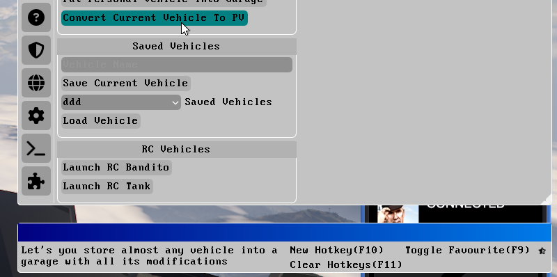
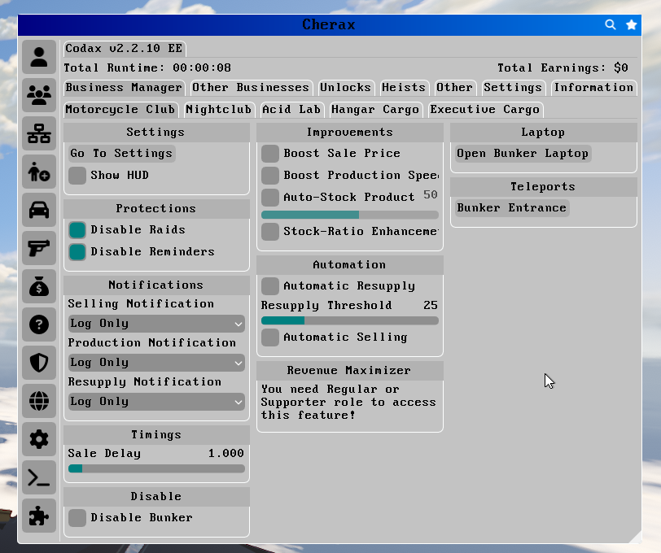

You can change the hotkey by going to Settings, hovering your mouse over the Toggle GUI option, and then pressing F10 to select a new hotkey.
Currently, Cherax does not have a publicly available full Battleye Bypass.
What this means, is that you can only play in solo sessions, or with other people who have Battleye disabled.
Public sessions do not work, as you will either get kicked from the session, or everyone will leave.
It is unknown when a Battleye bypass will come out - we only know that it will be a separate monthly subscription. When it is available, you'll be able to play with legits in public sessions again.
This most likely happens because you're trying to modify a Personal Vehicle. In order to save your modifications, you need to spawn a car, modify it, and then turn it into a personal vehicle, using the methods listed below.
If you spawned a car using Cherax, and you'd like to own it as a personal vehicle, you can use the "Convert Current Vehicle to PV" feature.
Simply spawn your vehicle with the Spawner, make any modifications you'd like by using Vehicle > LSC, and then use the feature mentioned above.
The Codax script is the safest way to make money. It works by automating your businesses. Install it from the Cherax Loader, and run it from the "Subscribed Scripts" tab in the Cherax Settings. You can find more help at the official Discord.
If you need money quicker, such as if you're on a brand new account with no businesses, you can try the Silent Night script, available at the official Discord. It has a feature to give 40 million GTA$ instantly, but the safety of it is unclear.
